Am ersten richtigen Tag in Takamatsu heißt es mal wieder ausschlafen. Die Aussicht zum Frühstück ist bereits bestechend schön, denn die Sonne glitzert im Hafenwasser. Genau da wollen wir hin: Die Fähren zu Takamatsus Kunstinsel Naoshima halten nämlich nur drei Minuten von unserem Hotel entfernt.
Die Insel ist nicht künstlich angelegt, sondern ist praktisch eine einzige Kunstausstellung. Überall auf der Insel stehen Skulpturen und der einst verlassene uralte Ort wurde teilweise in kleine Kunstateliers umfunktioniert. Die bekanntesten Kunstwerke davon sind wohl die gepunkteten Kürbisse von Yayoi Kusama. Vor allem in den 60ern und 70ern war sie aktiv und ist für ihre großen Installationen bekannt, die eben alle in knalligen Farben mit großen Punkten bemalt sind.
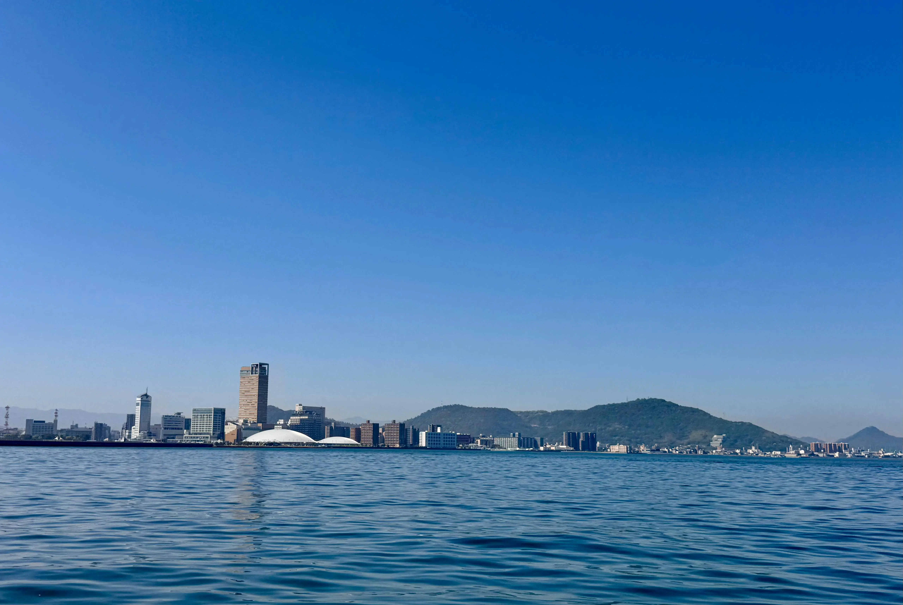
Der erste ihrer zwei Kürbisse begrüßt uns bereits am Hafen, ein großer, roter Kürbis mit schwarzen Punkten. Da er ein beliebtes Fotomotiv ist, hat sich davor natürlich eine Schlange gebildet. Insgesamt ist das wohl der Ort mit den meisten Touristen bislang. Und das, obwohl die Region, wie gesagt, zu wenig Touristen hat.
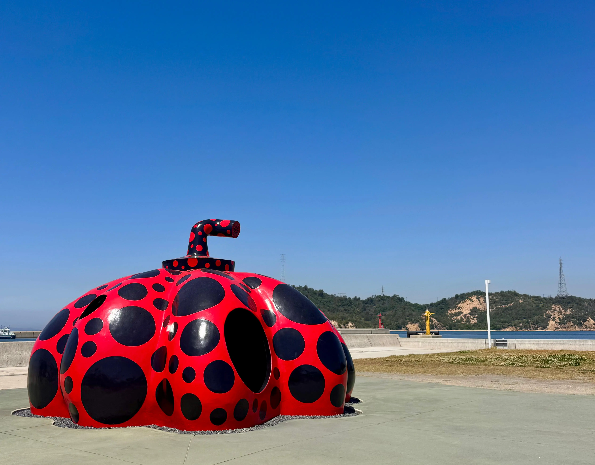
Um die Insel vernünftig und im eigenen Tempo besichtigen zu können, leihen wir uns Fahrräder aus. Es ist ein Gehacke an den drei Stationen, die Leihräder anbieten, weil die meisten welche vorbestellt haben. Aber da meine Mutti ja gewieft ist, bekommen wir die beiden letzten Räder. Dieses Mal hatte ich natürlich nicht den Luxus, mir ein passendes auszusuchen, und so ist mein Fahrrad viel zu klein. Praktisch ein Laufrad. Aber es fährt gut und hat einen Korb, sodass ich bei der Affenhitze nicht meine Tasche die ganze Zeit tragen muss.
Der Weg führt uns vorbei an einem 7-Eleven (natürlich kaufen wir uns einen Snack und erst mal Wasser), und dann durch die Altstadt. Die einzigen Leute, die man sieht, sind andere Touristen. Die erste Installation ist ein verlassenes Haus, das von außen mit Wellblech und Metallschrott bestückt wurde. Spiegel sind an den Wänden angebracht, wodurch man den Bambuswald daneben sehen kann, der einen starken Kontrast zu dem Rost bietet. Mama und ich ruhen uns kurz aus, dann geht es weiter.
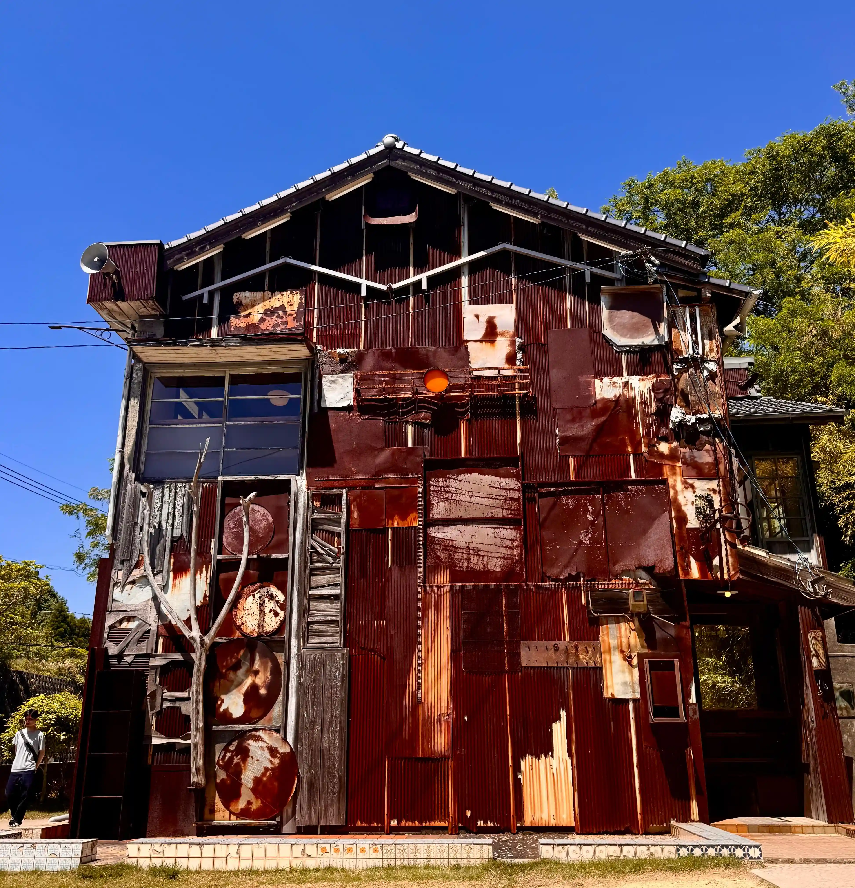
In einem der alten, dunklen Holzhäuser gibt es eine weitere Installation. Dieses Haus ist in seinem Grundschnitt, den Tatami-Matten auf dem Boden und den Schiebetüren aus Reispapier immer noch wie vor hunderten Jahren belassen.
Eine Info-Tafel weist darauf hin, dass das auch genau so gewollt ist: Denn da diese Region von heißen Sommern und viel Wind geplagt und gesegnet ist und es eine hohe Luftfeuchtigkeit gibt, sind alle diese traditionellen Häuser Planbauten. Jedes Haus ist an den Wasserläufen der Insel ausgerichtet, sodass neben fast jedem Haus ein Brunnen ist. Die meisten davon existieren bereits nicht mehr, aber das Kollektiv der Künstler hatte es sich zur Aufgabe gemacht, einige von ihnen „wiederzubeleben“. Früher waren es Begegnungsorte und Plätze zum Austausch.
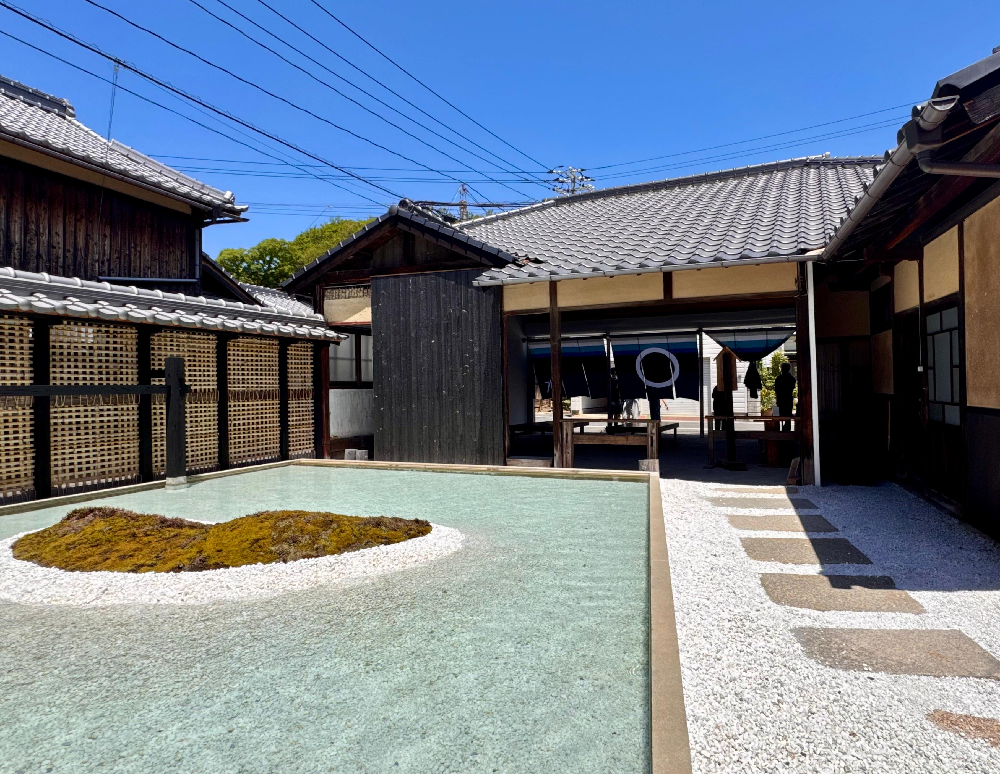
Außerdem sind die Häuser so konzipiert, dass der Nord-Süd-Wind durch die Häuser strömt. Zur Veranschaulichung sind kleine rote Bänder im Flur des Hauses angebunden, die leicht in der Brise wehen. Dieser leichte Zug bringt eine lang ersehnte Erfrischung. Es ist trotz der vielen Gäste ruhig. Im Innenhof, in dem es ursprünglich einen Garten gab, ist jetzt eine Art Zen-Garten aufgebaut, mit einem großen Wasserbecken. Die weißen Steine glitzern in der Sonne und sind nach dem dunklen Haus beinahe zu hell. Ein Steg führt bis zu dem Teich, und wir werden dazu angehalten, unsere Füße in das kühle Wasser zu halten, um uns zu erfrischen.
Weiter geht es durch den Ort. Wir schlendern durch Gassen, sehen ein paar Cafés, die noch geschlossen sind, und folgen dann der Landstraße vorbei an einem Seerosenteich mit Schildkröten bis hin zu einem Strand. Dort steht der zweite Kürbis, dieses Mal gelb-schwarz. Auch hier hat sich wieder eine Schlange für ein Foto neben dem Kunstwerk gebildet, doch Mama und ich ziehen stattdessen unsere Schuhe aus und laufen barfuß am Strand entlang bis zu einer großen Galerie.
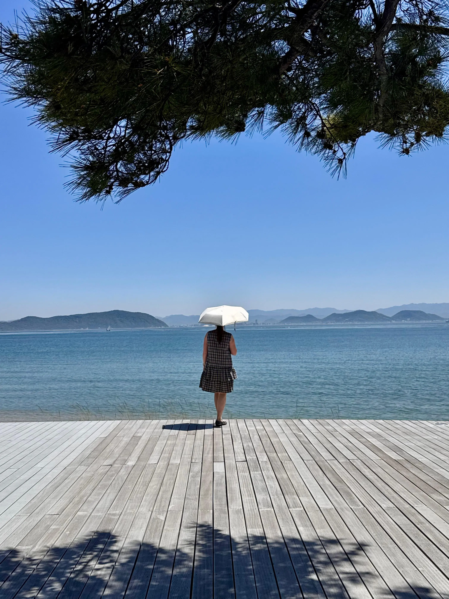
Erst als Mama dafür ihre Schuhe wieder anziehen will, stellt sie fest, dass ihre Socken verschwunden sind. Also ohne Socken in die Schuhe und erst mal im Schatten ausruhen. Große Pinien spenden Schatten, davor ist ein breiter Holzsteg. Der Blick reicht über die anderen Inseln bis hin zur Bucht von Takamatsu.
Zikaden zirpen über uns und Frauen in bunt gepunkteten Blusen laufen an uns vorbei. Schließlich treten wir gemächlich unseren Rückweg zu den Rädern an, da sehen wir etwas Eigenartiges im Sand liegen. Wir treten näher heran und tatsächlich: Es ist einer von Mamas Strümpfen, vollkommen durchtränkt von der Brandung. Keine fünf Schritte weiter liegt der andere. Sie sehen zugegebenermaßen etwas in Mitleidenschaft gezogen aus, doch immerhin hat Mama sie wieder.
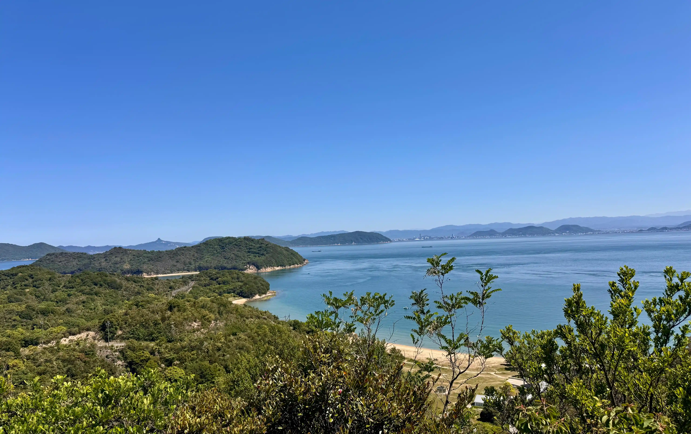
Wir wollen langsam den Rückweg antreten, doch das bedeutet, eine Straße mit gefühlt 30 % Steigung hochzukraxeln. Es ist wirklich anstrengend, aber auf halber Strecke liegt eine weitere Galerie mit einem wundervollen Garten voller Fingerhüte, einem Teich und dem Museumswächter, einer geschäftigen roten Katze. Es schwimmen sogar Fische in dem seichten Wasser.
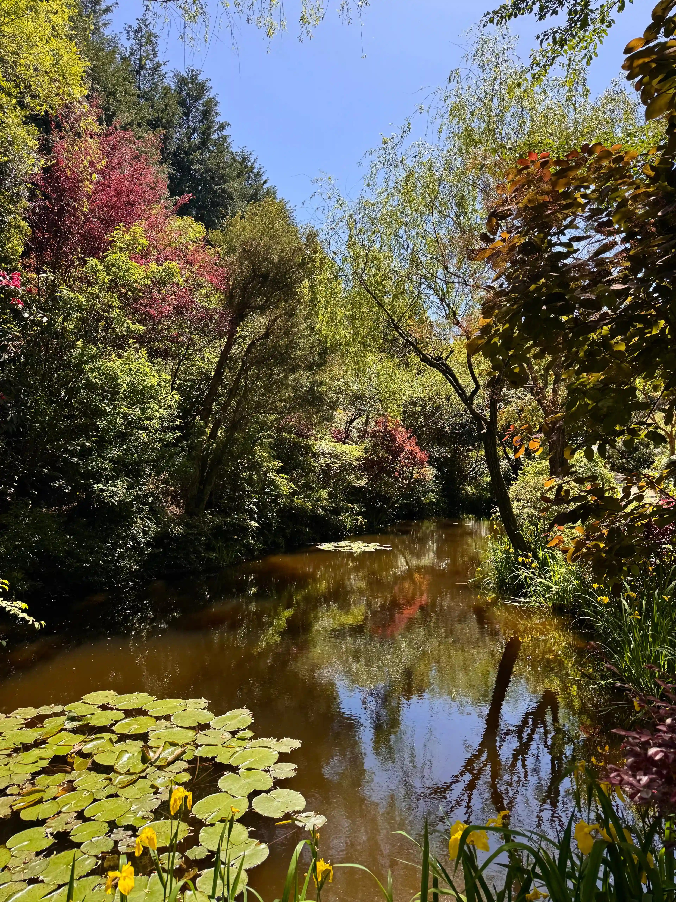
Scheinbar haben wir dort aber ein bisschen zu lange verschnauft, denn wir verpassen unsere Fähre – also müssen wir jetzt über zwei Stunden auf die letzte Fähre des Tages warten. Um über den Frust hinwegzukommen, fahren wir noch mal zu dem 7-Eleven und holen uns ein richtig schönes Mittag-/Abendbrot, das wir in einem Tempel direkt am Hafen essen. Wir sitzen unter verblühtem Blauregen und essen natürlich wieder unser Lieblingseis.
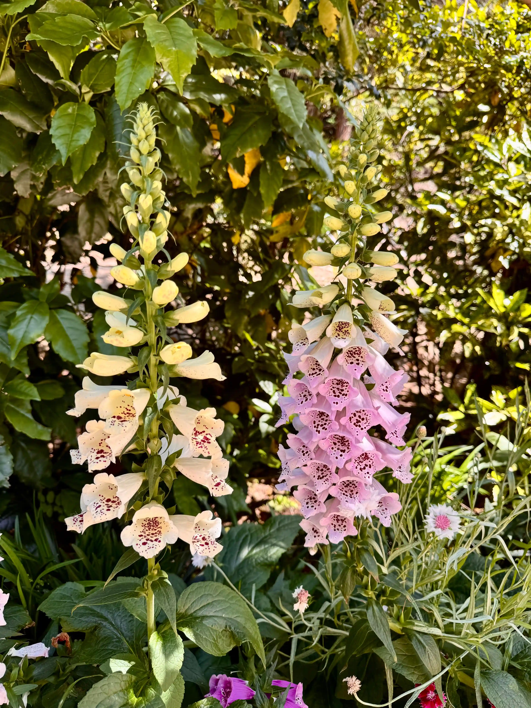
Um die Zeit totzuschlagen, fahren wir noch einmal in den historischen Ort, sitzen am Wasser und lauschen den Wellen. Es ist merklich ruhiger geworden, und so haben wir die Gassen beinahe für uns alleine.
Wir saugen noch einmal die Ruhe und die tolle Aussicht auf, dann fahren wir ein letztes Mal die Hauptstraße zum Hafen entlang, vorbei an den Galerien, am 7-Eleven und den Kunstinstallationen. Eine große verlassene Schule steht stumm am Wegesrand und bei dem Fahrradverleih ist kaum noch jemand. Die Stadt ist schon in die Abendruhe getaucht.
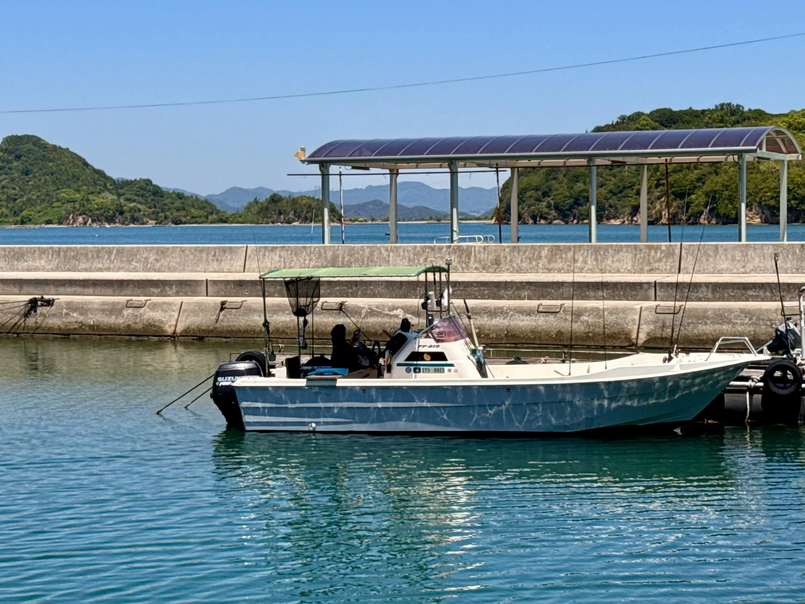
Anders ist es hingegen am Hafen. Hier warten hunderte Touris wie wir auf die letzte Fähre. Ordentlich müssen wir uns wie die Gänse aufreihen, durch die ganze Wartehalle hindurch. Ein bisschen lächerlich kommen wir uns schon vor, denn die Fähre ist nicht einmal halb voll. Trotzdem befolgen natürlich alle gehorsam die Regeln.
Wir sichern uns einen Platz oben auf dem Deck, binden uns gegen die Abendsonne ein Tuch um und beobachten die vorbeiziehenden Inseln. Good Bye, Naoshima.
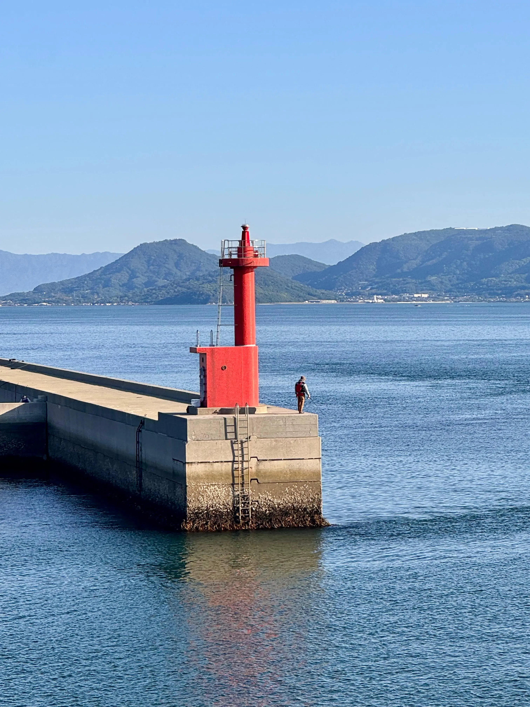
Im Hotel bleiben wir aber auch nicht lange, obwohl wir sehr kaputt sind, denn wir haben noch Hunger. Mit dem Abendessen haben wir heute aber ausnahmsweise gar kein Glück. Ich sage nur so viel: Wir suchen über anderthalb Stunden nach einem Restaurant. Entweder sind sie geschlossen, voll oder Raucherkneipen. Schließlich nehmen wir das erstbeste, das uns noch aufnimmt. Auch wenn die Bedienung freundlich ist, ist das Essen nur mittelmäßig. Immerhin hat es gesättigt. Und über die Trauer hilft ein Eis hinweg.
Mama ist ziemlich kaputt und wir freuen uns aufs Bett, doch im Hotelzimmer wartet eine böse Überraschung: Mamas kleines Federkissen fehlt. Der Bezug hat ungefähr die Farbe der Hotel-Schlafanzüge. Wahrscheinlich haben die Putzkräfte es bei der Reinigung einfach mitgenommen. Ich versuche noch, dem Hotelpersonal mit Händen und Füßen das Problem zu beschreiben, doch ohne Erfolg. Das Kissen ist weg und wird auch nicht wiedergefunden. Was für ein blöder Abschluss für diesen schönen Tag!
Der nächste Tag in Takamatsu wird eigentlich entspannt, weswegen ich mich darauf gefreut habe, auszuschlafen. Aber nix da: Ein Schiffshorn im Hafen hat scheinbar Langeweile, denn es trötet lange und immer wieder, bis ich es aufgebe und einfach früh aufstehe. Als hätten die Rezeptionisten das gewusst, rufen sie zu einer gottlos frühen Uhrzeit (zu der ich auf jeden Fall normalerweise noch schlafen würde) an, um uns mitzuteilen, dass sie das Kissen von Mama wirklich nicht mehr wiederfinden. Gut, immerhin haben sie noch mal gesucht.
Trotzdem starten wir entspannt in den Tag, schauen den kleinen Ameisenmenschen weit unter uns zu, wie sie bei der Straßenbahn warten und aus dem Kartenschalter drängen. Kurz darauf sind wir Teil von ihnen, denn es geht in die Ränder Takamatsus, genauer gesagt in ein Museumsdorf. Das ist kein historisches Dorf, sondern künstlich angelegt. Der Gründer startete in den 70er Jahren damit, traditionelle Bauten aus Shikoku, die abgerissen werden sollten oder dem Zerfall durch die Landflucht nahestanden, hier in Takamatsu wieder aufzubauen.
Weil die Stimmung heute eher schlecht ist (fehlender Schlaf, Hitze, Müdigkeit, Wehwehchen …), shoppen wir vorher aber therapeutisch. Denn auf dem Fußweg von der Bahnstation bis in das Dorf fällt uns ein Uniqlo vor die Füße. Was für ein Glück! Wir kommen uns zwar ein bisschen komisch vor, so als einzige Weiße, herausgeputzt für das Dorf zwischen all den Japanern, die nur kurz ein T-Shirt kaufen wollen, aber in dem klimatisierten Raum ist es trotzdem schön. Und natürlich kaufen wir auch ein, zwei Teile.
Irgendwie ist es dadurch schon relativ spät (beinahe Mittag), und ich beschließe, dass wir vor dem Museumsdorf noch essen gehen. Wir werden nicht grummelig und dann auch noch hangry den Tag verbringen. Unsere Wahl fällt auf das Udon-Nudel-Restaurant direkt gegenüber. Und siehe da: Nachdem wir gestern über eine Stunde erfolglos nach einem schönen Restaurant gesucht haben, werden wir heute entlohnt. Das Restaurant hat auf Tabelog (einer japanischen App für Café- und Restaurantbewertungen) das höchste Rating, das ich bisher gesehen habe. Und wir haben uns zufällig hineingesetzt.
Wir bekommen eine Riesenschüssel von den dicken, teigigen Udon-Nudeln, ich mit kalter Suppe und knusprig frittierten Riesengarnelen, Mama bestellt ihre Nudeln warm. Die Garnelen sind innen richtig saftig und zart im Geschmack. Die Frühlingszwiebeln, die in einer kleinen Schüssel neben der Suppe stehen, runden den Geschmack ab. Neben uns am Tisch schlürft eine Männergruppe in Windeseile und großer Lautstärke ihre Suppen, Mama und ich lassen uns Zeit. Die Suppe war die leckerste, die ich je gegessen habe. Ich wünschte, ich könnte noch einmal zurück und sie genießen!
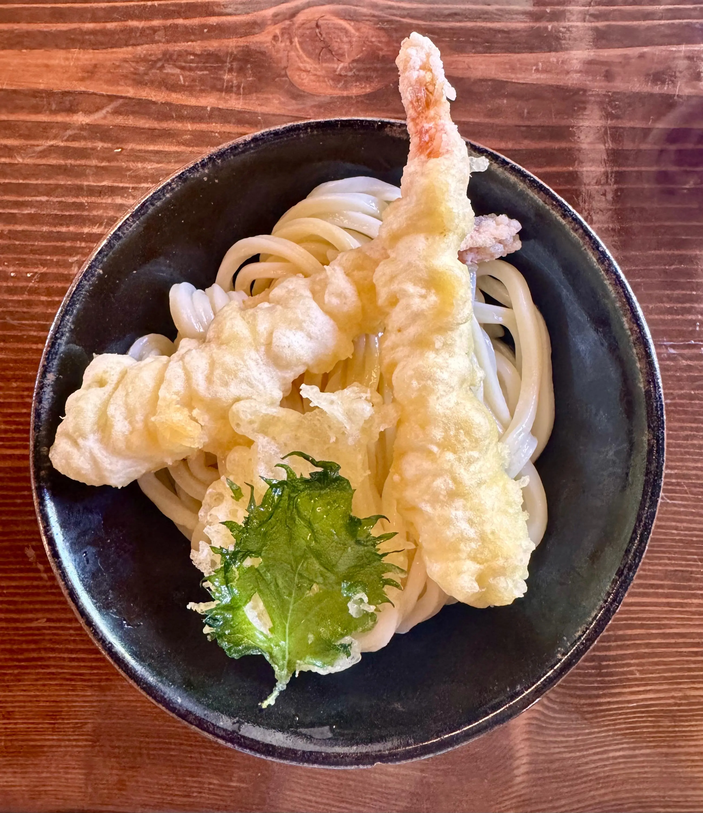
Schließlich machen wir uns dann aber doch auf zu unserem eigentlichen Ziel. Das Areal ist weitläufig und hübsch bepflanzt mit Laubbäumen, Büschen und Bambus, sodass es wirklich so wirkt, als würde man durch einen Park gehen, in dem rein zufällig historische Bauten aus diversen Epochen stehen. Außerdem gibt es einen kostenlosen Audio-Guide, den man auf dem eigenen Handy abspielen kann und der uns einiges zu den Häusern erzählt.
Der Rundweg startet allerdings an einer Hängebrücke aus Ranken. Früher sahen in ländlichen Regionen die Brücken wohl wirklich so aus. Mit großen, unsicheren Schritten laufen wir von Planke zu Planke, und ich bin schon dankbar über die Verstärkung aus Drahtseilen. Mir vorzustellen, dass die Leute hier früher mit ihren Waren und der Ernte rüber schleppen mussten, fällt mir schwer.
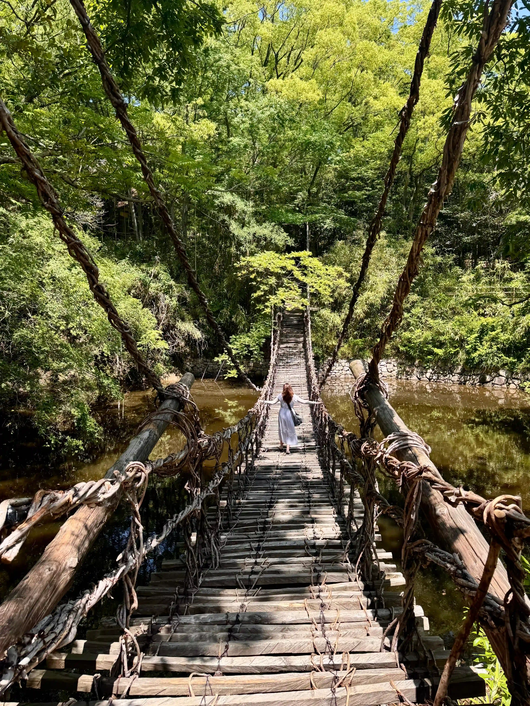
Wir schlendern über alte Steinbrücken, deren Flüsse bereits nicht mehr existieren, vorbei an Feuerwarntürmen aus dem 19. Jahrhundert und schauen uns Filme zur Sojasaucen-, Sake- und Bonbonproduktion in einem alten Lagerhaus an. In einer Sojasaucen-Brauerei stehen sogar noch die riesigen Fässer. Sie sehen ein bisschen aus wie Weinfässer, bloß dass sie nicht so bauchig sind. In den Tongefäßen daneben wurde die Sojasauce verkauft. Gute Sojasauce zu produzieren war schwierig und eine solche Leistung, dass auf einigen der Tongefäße voller Stolz der Name der Brauer geschrieben wurde.
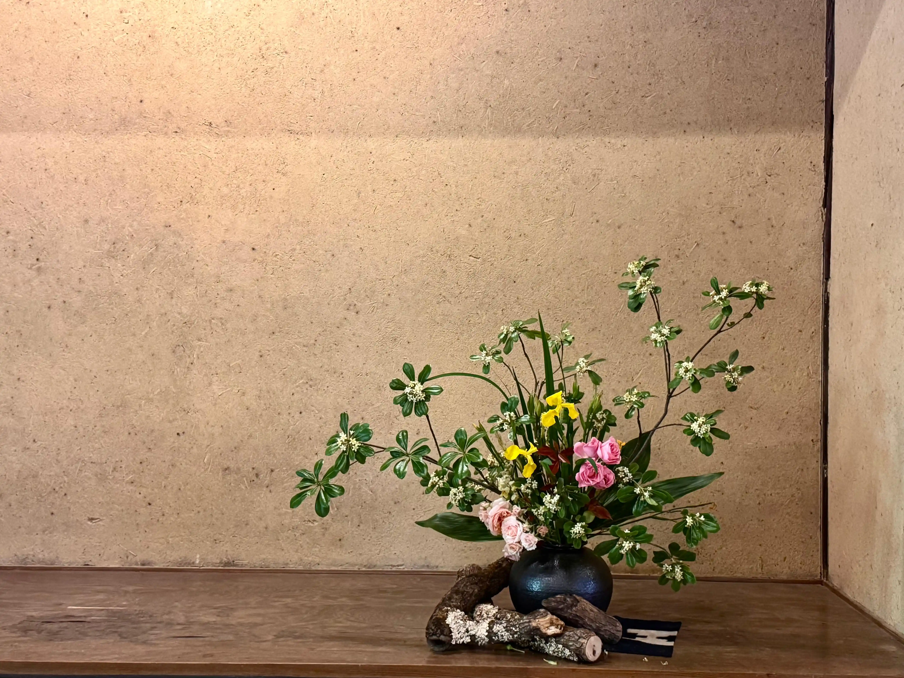
Die Häuser sind durch das natürliche bergige Terrain von Takamatsu ein wenig voneinander abgeschnitten, und der Bambuswald, durch den die Pfade führen, verstärkt die Illusion, dass man hier wirklich gerade durch ein vergessenes Stück Land läuft, obwohl die Bauweisen der Häuser sich natürlich gar nicht ähneln.
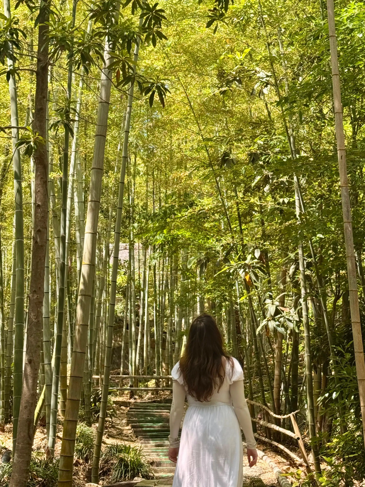
In der Mitte des Dorfes ist eine moderne Installation eines Wasserfalls, dessen Rauschen neben ein paar Vögeln das Einzige ist, das man hört. Hier merkt man, dass Takamatsu nicht mit viel Tourismus gesegnet ist. Wäre dieses „Dorf“ in Tokio, wäre es hier voller Menschen.
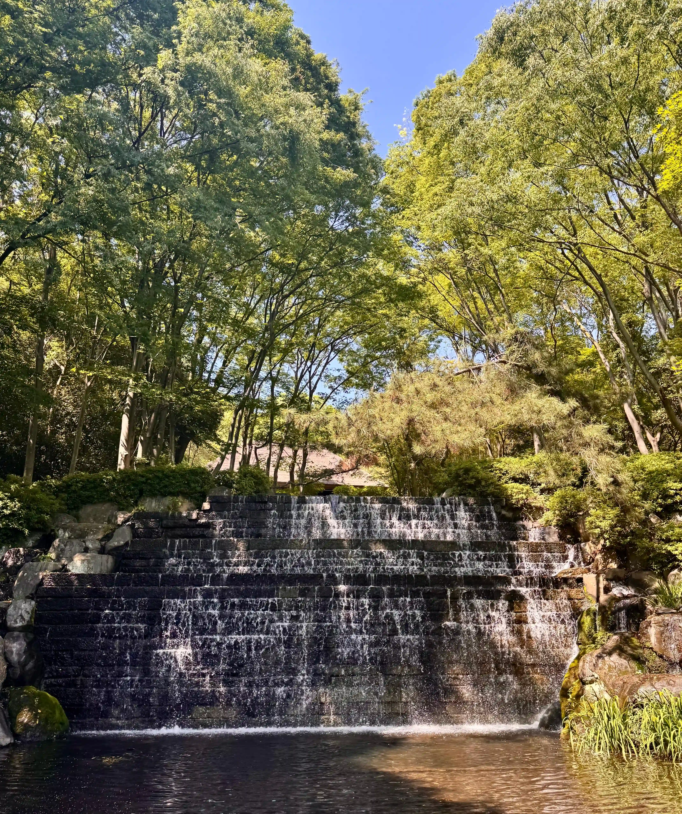
Neben den historischen Gebäuden gibt es oben auf dem Berg, der über das Areal wacht, einen Betonbau aus den 60er Jahren. Ursprünglich war der Besitzer nämlich ein Kunstsammler. Einige der Stücke stehen in dem Bunker. Ein Raum ist etwa mit Buddha-Statuen aus dem gesamten ostasiatischen Raum gefüllt. Man tritt schließlich aus dem Gebäude und erreicht einen Wassergarten, auf dem geräuschlos Wasser auf mehreren Ebenen zu einem Rosengarten am Fuß des Gebäudes fließt. Dieser Unterschied von dem grauen, kantigen Gebäude zu dem klaren Wasser und den rankenden Rosen macht diesen Ort ganz besonders.
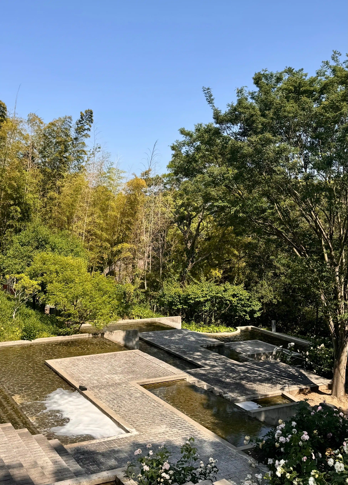
Auf dem Rückweg zum Ausgang sehen wir ein beängstigendes Schild, das vor Hornissen warnt – und prompt sehen wir eine. In etwas schnellerem Tempo laufen wir also den Weg hinunter, von der Neuzeit wieder zurück in die vergangenen Jahrhunderte eines ländlichen Japans, das man mit der Ruhe weder in Tokio noch in Kyoto sehen würde.
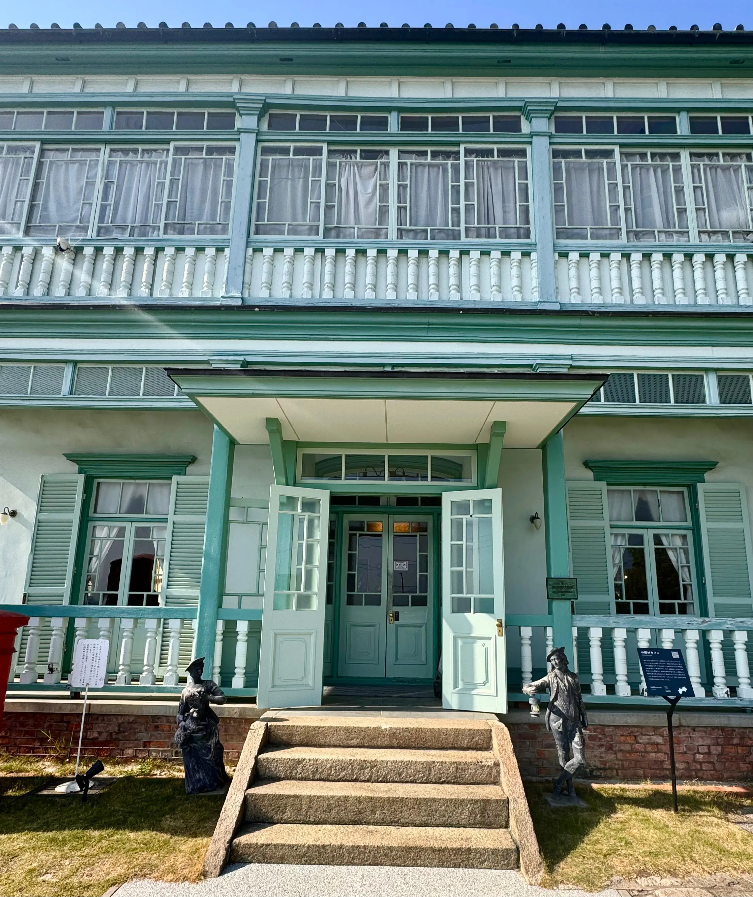
Nach unserem Museums-Besuch stoppen wir noch in dem Café nebenan. Es ist absolut kitschig im Stil des viktorianischen Englands gehalten. Eine Gruppe älterer Frauen sind die einzigen anderen Besucherinnen, und so suchen Mama und ich uns einen Platz neben dem unbenutzten Flügel. Das Café mag vielleicht ein bisschen in die Jahre gekommen sein (dieser „Look“ war in den 90er- und 00er-Jahren in Japan beliebt), doch das bedeutet, dass man nostalgische Speisen bestellen kann.
Für Mama bedeutet das ein Kaffee-Gelée mit Vanilleeis, für mich eine atomar-grüne Limo, in der ebenfalls eine Kugel Eis schwimmt, getoppt mit einer eingelegten, neonfarbenen Kirsche. Ist es eine absolute Zuckerbombe? Ja. Wird es mir danach schlecht gehen? Wahrscheinlich. Aber obwohl die Kombo von Eis mit sprudeliger Limo vielleicht ungewöhnlich ist, schmeckt es wirklich gut! Mama bestellt noch ein Stück Käsekuchen, der das Ganze abrundet.
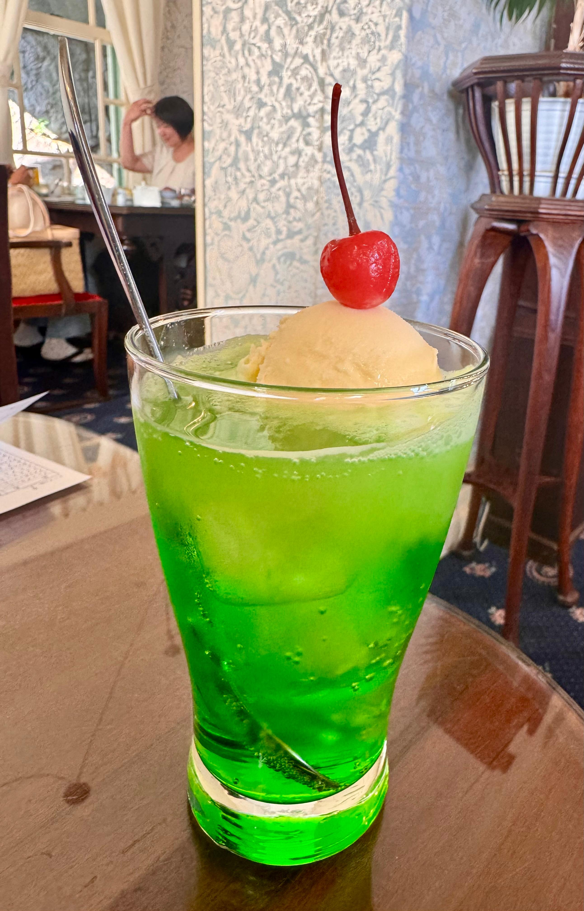
Mit vollen Bäuchen laufen wir durch verlassene Straßen zurück zur Bahnstation. Aber es geht noch nicht zurück zum Hotel, oh nein! Wir halten noch an einem Einkaufszentrum (ja, ja, ich weiß). Dieses Mal allerdings nicht zum Shoppen, sondern um in einem Buchladen nach Manga-Figuren zu stöbern. Dieser hier hat nämlich eine riesige Auswahl an Second-Hand-Figuren, von denen ich welche als Souvenir kaufe. Außerdem mache ich einen kleinen Glücksfund: Es gibt sogar ein paar Dinge für meine kleinen Kerlchen. Mama muss natürlich ewig warten, aber für mich war es ein Riesenerfolg.
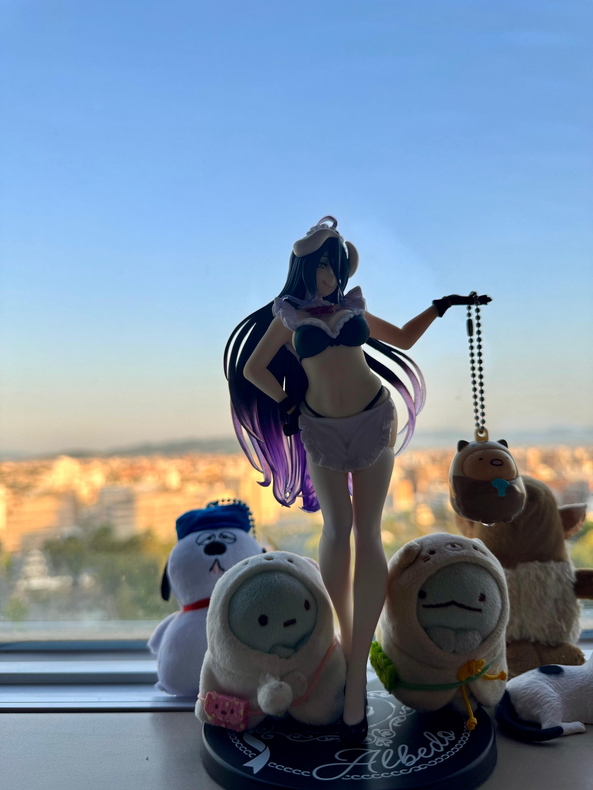
Und so tritt bereits unser letzter Abend in Takamatsu an. Wir suchen nicht noch mal nach einem Restaurant, sondern essen nur noch eine Kleinigkeit vom 7-Eleven. Kurz vor Sonnenuntergang fassen wir uns trotz der Erschöpfung doch noch ein Herz und laufen die Promenade entlang.
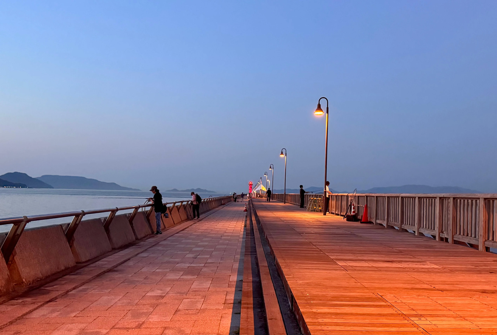
Eine künstliche Landzunge geht einige hundert Meter in die Bucht hinein, und am Ende leuchtet ein Leuchtturm aus rotem Glas in die Nacht hinein. Die Sonne verschwindet langsam hinter den hunderten Inseln der Inlandsee.
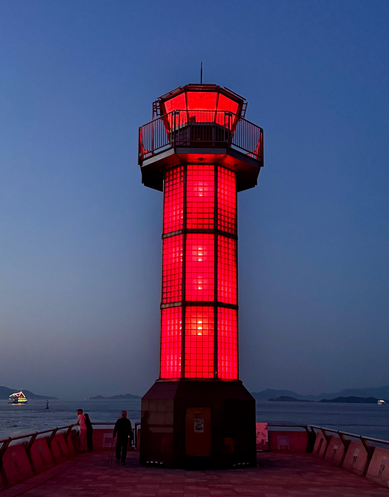
Es ist immer noch warm und einige Leute joggen an uns vorbei. Teenager sitzen auf den vorgelagerten Stufen, ein paar von ihnen angeln. Ein plüschiger kleiner Hund kommt uns stolz entgegen, und Mama spricht prompt seine Besitzerin an. Wir unterhalten uns ein bisschen, denn die Frau kann tatsächlich ein bisschen Englisch. Der Wuffel heißt Harumi, wie der Frühling. Sie freut sich, dass wir diese Region Japans besuchen, und man merkt wieder einmal den Lokalpatriotismus, der mir in Kumamoto und beim Shimanami Kaido bereits aufgefallen ist.
Ihre Freude ist ansteckend, und ich atme noch einmal die abendliche Seeluft ein. Morgen fahren wir die weite Strecke in die größte Metropole der Welt. So einen Abend wie jetzt werden wir dort nicht mehr haben und eine solche Begegnung ebenfalls nicht.
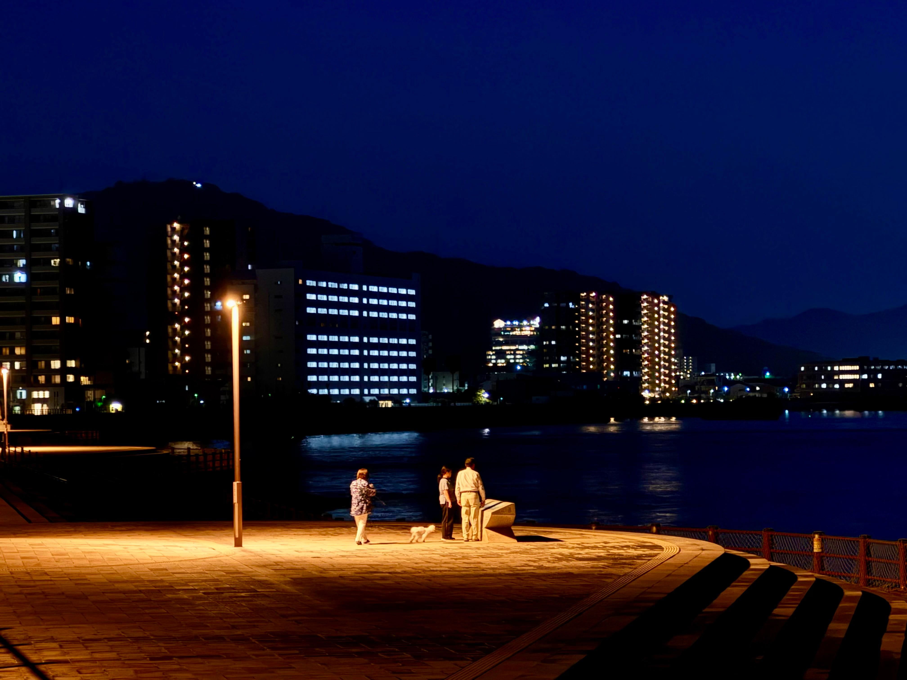
Trotz der anfänglichen Schwierigkeiten finde ich so meinen Frieden mit Takamatsu. Ich stehe dazu, dass die Stadt an sich nicht besonders hübsch ist. Aber das Umland und die Leute machen den Ort eine Reise wert!
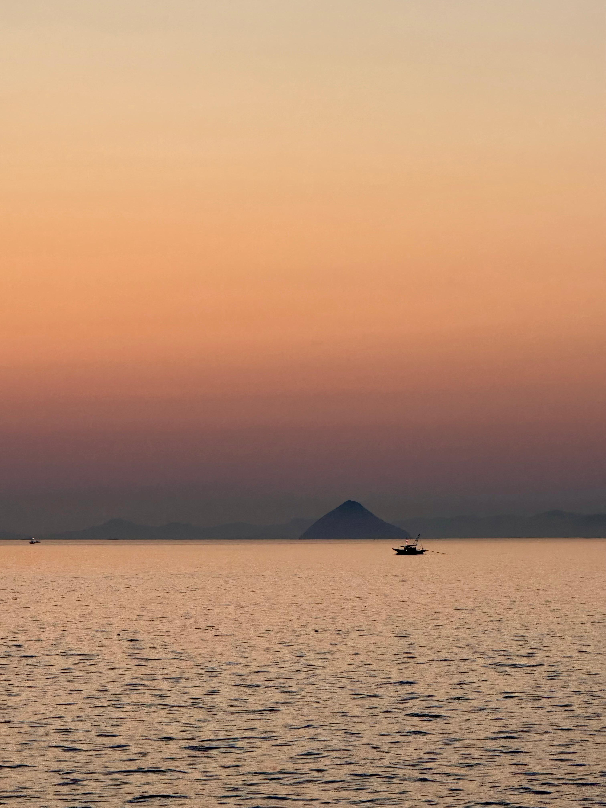